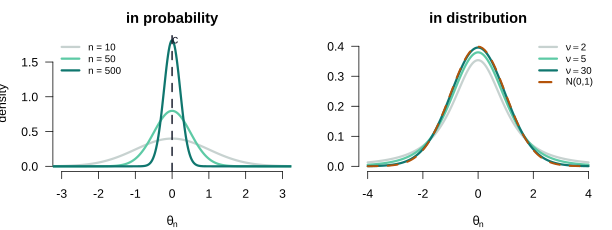
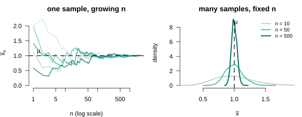
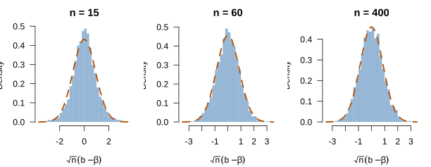

Large Sample Theory: Consistency and Asymptotic Normality
Lecture 5
0.1 Where we are
Where this lecture sits
DGPIdentificationEstimationAsymptoticsInference
Computation
Lecture 4 gave exact, finite-sample results — but at a price: the sampling distribution needed normal disturbances (A6), and even unbiasedness is rare outside least squares. This lecture drops both crutches and asks a different question: not what \(\bb\) is for a fixed \(n\), but what happens to it as \(n \to \infty\).
The trade is deliberate. We give up exactness and gain generality: consistency will hold where unbiasedness fails, and a normal limiting distribution will emerge with no assumption that the errors are normal. The whole apparatus rests on a small toolkit of limit theorems, which we build first — in complete generality, on a sample mean — and only then turn on least squares.
Two limits of finite-sample theory
Both problems have one resolution: stop demanding results that hold for every \(n\), and ask instead what holds approximately, with the approximation improving as the sample grows. That is asymptotic theory. It is the language the rest of the course speaks.
1 Part I · The toolkit
1.1 Convergence
Two ways a sequence of estimators can settle down
An estimator is a random variable for each \(n\), so a sequence of them, \(\{\theta_n\}\), is a sequence of random variables. There are two senses in which it can “converge”.
Definition 1 (Convergence in probability and in distribution) \(\theta_n\) converges in probability to \(c\), written \(\theta_n \pto c\) or \(\plim\,\theta_n = c\), if for every \(\delta > 0\), \(\;\Prob(|\theta_n - c| > \delta) \to 0\).
\(\theta_n\) converges in distribution to a random variable \(Z\), written \(\theta_n \dto Z\), if the cdf of \(\theta_n\) converges to that of \(Z\) at every continuity point.
Convergence in probability pins the sequence onto a number — the sampling distribution collapses to a spike. Convergence in distribution pins its shape onto that of a fixed random variable, after any needed rescaling. Consistency will be the first kind; asymptotic normality the second.
Seeing the two modes of convergence
Consistency, named
Applied to an estimator, convergence in probability has a name.
Definition 2 (Consistency) An estimator \(\hat\theta_n\) of a parameter \(\theta\) is consistent if \(\hat\theta_n \pto \theta\) — equivalently, \(\plim\,\hat\theta_n = \theta\). Its sampling distribution collapses onto the true value as \(n \to \infty\).
Consistency is the large-sample counterpart of unbiasedness, and a weaker demand: not “right on average for every \(n\)”, but “arbitrarily close to the truth, with probability approaching one, as \(n\) grows”. An estimator can be biased at every finite \(n\) and still be consistent.
1.2 The law of large numbers
The sample mean finds the truth
Theorem 1 (Weak Law of Large Numbers) If \(x_1, \dots, x_n\) are i.i.d. with \(\E|x| < \infty\) and mean \(\mu\), then the sample mean is consistent for \(\mu\): \[\bar{x}_n = \frac1n\sum_{i=1}^n x_i \;\pto\; \mu.\]
The only requirement is a finite mean. No normality, no bounded support — an average of enough independent draws lands on the population mean.
What a Monte Carlo simulation is
Monte Carlo—The recipe, in four steps
A Monte Carlo approximates something hard to derive in closed form by drawing many samples from a known model and computing the quantity on each — here, an estimator’s sampling distribution:
- Fix a DGP with known truth (right panel: \(x \sim \text{Exp}(1)\), so \(\mu = 1\)).
- Draw one sample of size \(n\); compute \(\bar{x}\) — one realization.
- Repeat \(R = 4{,}000\) times, collecting \(R\) values of \(\bar{x}\).
- Their histogram is the sampling distribution at that \(n\); grow \(n\) and it concentrates on \(\mu\).
Seeing the law of large numbers

1.3 The central limit theorem
After rescaling, everything is normal
Consistency says \(\bar{x}_n \pto \mu\), so \(\bar{x}_n - \mu \pto 0\) — the distribution collapses and, on its own, tells us nothing about shape. The trick is to magnify it by exactly the rate at which it shrinks, \(\sqrt{n}\).
Theorem 2 (Central Limit Theorem (Lindeberg–Lévy)) If \(x_1, \dots, x_n\) are i.i.d. with mean \(\mu\) and finite variance \(\sigma^2\), then \[\sqrt{n}\,(\bar{x}_n - \mu) \;\dto\; \Normal(0, \sigma^2).\]
The limiting law is normal whatever the distribution of \(x\) — the single most useful fact in econometrics, and the reason A6 can be discarded.
Asymptotic normality, named
The CLT is exactly the statement that the sample mean is asymptotically normal.
Definition 3 (Asymptotic normality) An estimator \(\hat\theta_n\) is asymptotically normal if, after centring and \(\sqrt{n}\)-scaling, it converges in distribution to a normal: \[\sqrt{n}\,(\hat\theta_n - \theta) \;\dto\; \Normal(\bzero, \bV).\] The matrix \(\bV\) is its asymptotic variance, written \(\Asyvar[\hat\theta_n] = \bV\).
Seeing the central limit theorem

1.4 Combining limits
The continuous mapping theorem, and the algebra of plims
Raw limits are rarely the end — we want limits of functions, sums and products of estimators. The continuous mapping theorem delivers them, and its most-used corollary is a simple algebra.
Theorem 3 (Continuous Mapping Theorem) Let \(g\) be continuous at \(c\). If \(\theta_n \pto c\) then \(g(\theta_n) \pto g(c)\); and if \(\theta_n \dto Z\) then \(g(\theta_n) \dto g(Z)\).
Corollary 1 (Algebra of probability limits) If \(\theta_n \pto c\) and \(\gamma_n \pto d\), then \[\theta_n + \gamma_n \pto c + d, \qquad \theta_n\gamma_n \pto cd, \qquad \frac{\theta_n}{\gamma_n} \pto \frac{c}{d}\ (d \neq 0).\]
Slutsky: mixing the two modes
The plim algebra combines terms that all converge to numbers. Asymptotic normality needs to combine a term that converges to a normal with one that converges to a constant — a different theorem.
Theorem 4 (Slutsky’s Theorem) If \(\theta_n \dto Z\) and \(\gamma_n \pto c\) (a constant), then \[\theta_n + \gamma_n \dto Z + c, \qquad \gamma_n\theta_n \dto cZ.\]
Slutsky is the mixed-mode result: a term that converges in distribution (a normal) times a term that converges in probability (a constant matrix) stays normal. That is exactly the shape of the least-squares argument in Part II — a normal \(\tfrac1{\sqrt n}\bX'\beps\) multiplied by a constant \(\bQ^{-1}\). The plim algebra proves consistency; Slutsky proves asymptotic normality.
2 Part II · Least squares in large samples
2.1 The asymptotic assumptions
What replaces normality
We keep A1–A3 and add two assumptions tailored to limits, replacing A4/A6.
Definition 4 (A5a and A2\('\)) A5a (i.i.d. sampling). \(\{(y_i, \mathbf{x}_i)\}_{i=1}^n\) are independent and identically distributed.
A2\('\). \(\;\plim \dfrac{\bX'\bX}{n} = \bQ = \E[\mathbf{x}\mathbf{x}']\), a finite positive-definite matrix.
A2\('\) is the sample analogue of A2 that survives into the limit: the design keeps enough variation as \(n\) grows that \(\bQ\) is invertible.
2.2 Consistency of least squares
The one decomposition, again
Everything follows from the sampling-error decomposition of Lecture 4, now divided through by \(n\):
\[\bb = \bbeta + \eqt{a}{\left(\frac{\bX'\bX}{n}\right)^{-1}}\eqt{b}{\left(\frac{\bX'\beps}{n}\right)}\]
a
By A2\('\), \(\bX'\bX/n \pto \bQ\); the Continuous Mapping Theorem gives \((\bX'\bX/n)^{-1} \pto \bQ^{-1}\), a finite limit.
b
By the WLLN, \(\bX'\beps/n = \tfrac1n\sum_i \mathbf{x}_i\varepsilon_i \pto \E[\mathbf{x}\varepsilon] = \bzero\) under A3. This is the term that carries exogeneity — the single point where consistency can fail.
Consistency
Theorem 5 (Consistency of least squares) Under A1–A3, A5a and A2\('\), \(\;\plim\,\bb = \bbeta\).
Proof. Take probability limits in the decomposition. By Slutsky the product converges to the product of the limits, \(\bQ^{-1}\cdot\bzero = \bzero\), so \(\plim\,\bb = \bbeta + \bzero = \bbeta\). \(\square\)
What consistency buys that unbiasedness did not
Unbiasedness needed A3 and gave an exact centring for every \(n\); consistency needs A3 and gives convergence to the truth as \(n\) grows. The gain is that consistency travels: it survives in settings — instrumental variables, GMM, maximum likelihood — where no unbiased estimator exists. It is the property the rest of the course actually uses.
2.3 Asymptotic normality
Magnify by √n
The raw estimator collapses onto \(\bbeta\); to recover the shape of its fluctuations we rescale the sampling error by \(\sqrt{n}\): \[\sqrt{n}\,(\bb - \bbeta) = \left(\frac{\bX'\bX}{n}\right)^{-1}\underbrace{\frac{1}{\sqrt{n}}\bX'\beps}_{\text{a CLT term}}.\] The left factor \((\bX'\bX/n)^{-1} \pto \bQ^{-1}\) by A2\('\) and the plim algebra. Everything then hinges on the second factor — so, before naming any distribution, we find its variance.
The variance of the score
The CLT term is \(\tfrac{1}{\sqrt n}\bX'\beps = \sqrt{n}\,\bar{\mathbf{w}}\), an average of the i.i.d. vectors \(\mathbf{w}_i = \mathbf{x}_i\varepsilon_i\). By A3 each has mean \(\bzero\), so its variance is just the second moment: \[\bOmega \;\equiv\; \Var[\mathbf{w}_i] \;=\; \E[\mathbf{w}_i\mathbf{w}_i'] \;=\; \E[\varepsilon^2\,\mathbf{x}\mathbf{x}'].\] By the CLT, \(\tfrac{1}{\sqrt n}\bX'\beps \dto \Normal(\bzero, \bOmega)\).
Read the sizes carefully — this is where the matrix algebra trips people up. Each \(\mathbf{x}_i\) is a \(K\times 1\) vector, so the outer product \(\mathbf{x}_i\mathbf{x}_i'\) is \(K \times K\), while \(\varepsilon_i^2\) is a scalar; their average is the \(K \times K\) matrix \(\bOmega\). It is \(\varepsilon_i^2\) (a scalar, one observation) and not \(\beps\beps'\) (the \(n\times n\) matrix \(\bD\) of Lecture 4): \(\bOmega\) is the per-observation object, linked to \(\bD\) by \(\tfrac1n\bX'\bD\bX \pto \bOmega\). For the same reason \(\bQ = \E[\mathbf{x}\mathbf{x}']\) is per-observation — the limit of the average \(\bX'\bX/n\), not \(\E[\bX'\bX]\), which would grow with \(n\).
The limiting distribution, in general
Slutsky combines the two factors — a normal times a constant matrix stays normal:
Theorem 6 (Asymptotic normality of least squares) Under A1–A3, A5a and A2\('\), \[\sqrt{n}\,(\bb - \bbeta) \;\dto\; \Normal\!\big(\bzero,\ \bQ^{-1}\bOmega\,\bQ^{-1}\big), \qquad \bOmega = \E[\varepsilon^2\mathbf{x}\mathbf{x}'].\]
Proof. \(\tfrac1{\sqrt n}\bX'\beps \dto \Normal(\bzero, \bOmega)\) by the CLT and \((\bX'\bX/n)^{-1} \pto \bQ^{-1}\) by A2\('\). By Slutsky the product converges to \(\bQ^{-1}\Normal(\bzero,\bOmega) = \Normal(\bzero, \bQ^{-1}\bOmega\bQ^{-1})\). \(\square\)
The homoskedastic special case
A4 says the conditional second moment of the error does not depend on \(\mathbf{x}\): \(\E[\varepsilon^2 \mid \mathbf{x}] = \sigma^2\), a constant. By the law of iterated expectations, \[\bOmega = \E[\varepsilon^2\mathbf{x}\mathbf{x}'] = \E\big[\,\underbrace{\E[\varepsilon^2 \mid \mathbf{x}]}_{=\ \sigma^2}\,\mathbf{x}\mathbf{x}'\,\big] = \E[\sigma^2\mathbf{x}\mathbf{x}'] = \sigma^2\,\E[\mathbf{x}\mathbf{x}'] = \sigma^2\bQ,\] and the sandwich collapses:
Corollary 2 (Homoskedastic limiting distribution) Adding A4, \(\bOmega = \sigma^2\bQ\), so \[\sqrt{n}\,(\bb - \bbeta) \;\dto\; \Normal\!\big(\bzero,\ \sigma^2\bQ^{-1}\big).\]
The \(\sigma^2\) leaves the expectation only because A4 makes it a constant — the same number for every \(\mathbf{x}\), so it factors out. Without A4 the conditional variance is a function \(\sigma^2(\mathbf{x})\) that stays inside, weighting each \(\mathbf{x}\mathbf{x}'\) differently, and \(\bOmega\) does not simplify — which is precisely the heteroskedastic sandwich.
Seeing asymptotic normality

2.4 Estimating the asymptotic variance
From the limit to a standard error
In large samples \(\bb \approx \Normal\!\big(\bbeta,\ \tfrac1n\bQ^{-1}\bOmega\bQ^{-1}\big)\). To use it we plug in consistent estimates: the bread \(\bQ\) by \(\bX'\bX/n\); the filling \(\bOmega = \E[\varepsilon^2\mathbf{x}\mathbf{x}']\) by its sample analogue, residuals in place of errors, \(\tfrac1n\sum_i e_i^2\,\mathbf{x}_i\mathbf{x}_i'\). This is the robust (sandwich) estimator: \[\widehat{\Asyvar}[\bb] = (\bX'\bX)^{-1}\Big(\textstyle\sum_i e_i^2\,\mathbf{x}_i\mathbf{x}_i'\Big)(\bX'\bX)^{-1}.\]
The homoskedastic short-cut
Under A4 there is a single scalar to estimate: \(\bOmega = \sigma^2\bQ\) needs only \(s^2 = \be'\be/(n-K)\), and the sandwich collapses to \[\widehat{\Asyvar}[\bb] = s^2(\bX'\bX)^{-1}.\]
Connection—This is exactly Lecture 4's sandwich
The robust estimator above is the heteroskedasticity-consistent covariance matrix asserted in Lecture 4 — now derived. HC0–HC4 are the competing estimators of the filling \(\bOmega\) (they differ only in the leverage correction on \(e_i^2\)); the bread \((\bX'\bX)^{-1}\) is common to all. The asymptotic argument Lecture 4 deferred is this whole section.
2.5 Beyond Gauss-Markov
Asymptotic efficiency
As \(n \to \infty\) the variance of \(\bb\) collapses to \(\bzero\) — every consistent estimator does — so raw variances cannot rank them. We compare the asymptotic variance \(\bV\), the non-degenerate limit of the rescaled estimator: \(\sqrt{n}(\bb - \bbeta) \dto \Normal(\bzero, \bV)\).
Definition 5 (Asymptotic efficiency) Within a class of consistent, asymptotically normal estimators, \(\bb\) is asymptotically efficient if \(\bV_{\tilde{\bbeta}} - \bV_{\bb} \succeq \bzero\) (positive semi-definite) for every competitor \(\tilde{\bbeta}\) in the class.
Gauss-Markov ranked linear, unbiased estimators by finite-sample variance. Asymptotics widens the field to consistent estimators — possibly biased, possibly nonlinear — ranked by \(\bV\). Under A1–A4 least squares attains the smallest \(\bV\); when A4 fails it is consistent but not efficient, and generalized least squares reweights to a smaller \(\bV\).
2.6 What we have, and where it goes
The scoreboard
| Finite sample (Lecture 4) | Large sample (Lecture 5) |
|---|---|
| Unbiased: \(\E[\bb\mid\bX] = \bbeta\) | Consistent: \(\plim\,\bb = \bbeta\) |
| Exact normal only under A6 | Asymptotically normal without A6 |
| Sandwich variance (asserted) | Sandwich variance (derived here) |
| Rare outside OLS | Travels to IV, GMM, MLE |
The asymptotic normal distribution is the raw material of inference: a normal centred on \(\bbeta\) with a variance we can estimate is exactly what a \(t\)-statistic and a confidence interval are built from. That construction is Lecture 6.
2.7 Reading
Sources
| Hansen | Chapter 5 (the toolkit: convergence, WLLN, CLT) and Chapter 6 (asymptotic theory for least squares) |
| Greene | Chapter 4 (asymptotic properties) and Appendix D (large-sample distribution theory) |
Hansen’s Chapters 5 and 6 supply the structure used here — the general limit theorems first, the least-squares application second. Greene’s Appendix D is the reference for the theorem statements, and Chapter 4 for the least-squares results.